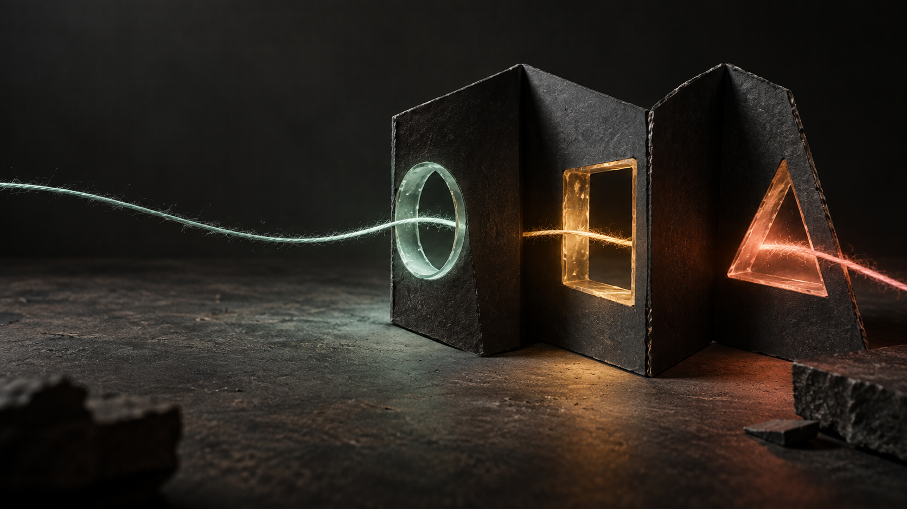

01 / INPUTTHINK
Fikri
akışa çevir.
AI araçlarını kullanmakla kalmayız; araştırma, karar ve tekrar eden işi insan kontrolünü koruyan bir sisteme bağlarız.
↗ÖMER + MÜGE / BAĞIMSIZ DİJİTAL STÜDYO
Fikir önce bir titreşimdir.
AI ustalığı, hızlı web deneyimleri, SEO ve içerik. Bunları ayrı hizmetler olarak değil, fikri gerçekten ileri taşıyan tek bir akış olarak kuruyoruz.
Fare veya dokunuşla sahneyi hareket ettir. Sağdaki akışı başlat ve fikrin nasıl şekil değiştirdiğini gör.

Bir çizgi. Üç dönüşüm. Sonunda işin içinde yaşayan bir sistem.
02 / AKIŞIN MANTIĞI
Önce problemin hareketini anlarız. Sonra doğru aracı, doğru görsel dili ve doğru ritmi aynı akışın içine koyarız.
AI araçlarını kullanmakla kalmayız; araştırma, karar ve tekrar eden işi insan kontrolünü koruyan bir sisteme bağlarız.
↗Web sitesi, SEO ve içerik mimarisi aynı yöne baktığında fikir bulunur, anlaşılır ve güven verir.
□Görsel dil, sosyal içerik ve kısa video ile sistemin insanlara dokunan tarafını hatırlanabilir hâle getiririz.
△03 / İKİ EL, TEK AKIŞ
Birimiz AI, otomasyon, web ve SEO sistemlerinin içini kurar. Diğerimiz içeriği, görsel dili ve deneyimi insanlara bağlar. Birlikte fikirleri sadece güzel değil, çalışır hâle getiririz.
04 / GERÇEK ÇALIŞMALAR
Sistemi fikirden uygulamaya götüren işler: araştırma, otomasyon, web, görünürlük ve içerik.
05 / AÇIK KANAL
Yeni bir web sitesi, AI destekli bir operasyon, SEO düzenlemesi ya da daha iyi bir içerik ritmi. İlk sinyali verin, birlikte nereye gidebileceğine bakalım.
itsomervural@gmail.com ↗